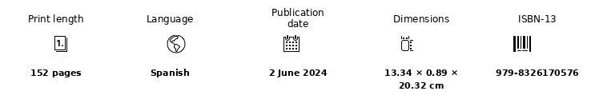

Essay · artificial intelligence · consciousness
La pesadilla de Bradbury
La pesadilla de Bradbury explores the quiet revolution artificial intelligence is bringing about in our society and the questions it raises about consciousness and our own nature.
Between rigorous explanation and humanistic reflection, this essay weaves the latest technological advances together with fundamental questions about consciousness and our own nature. Its path leads into territories where the distinction between the human and the artificial becomes increasingly difficult to sustain.
From the subtleties of new computational models to parallels with consciousness in the animal kingdom, the book offers a critical, multidisciplinary analysis of AI. It builds bridges between disciplines in order to examine how these technologies alter our perception of intelligence, consciousness and ourselves.
Edition details
